Case study · Cabify Spain · Sep 2026 to now · flagship project, in delivery
DQM · Driver Quality Management
Driver quality lived in eight different tools, reset every week and mostly only punished. DQM is the missing layer on top: one score per driver that combines productivity, rider experience, conduct, fraud and documentation, compares each driver only with comparable drivers, and triggers a graded response. I am the delivery lead: data architecture, score design, business rules, the simulator and the pipeline.
 The score engine runs 24/7 on the team's Mac mini, next to my local AI agent, until the final infrastructure is in place.
The score engine runs 24/7 on the team's Mac mini, next to my local AI agent, until the final infrastructure is in place.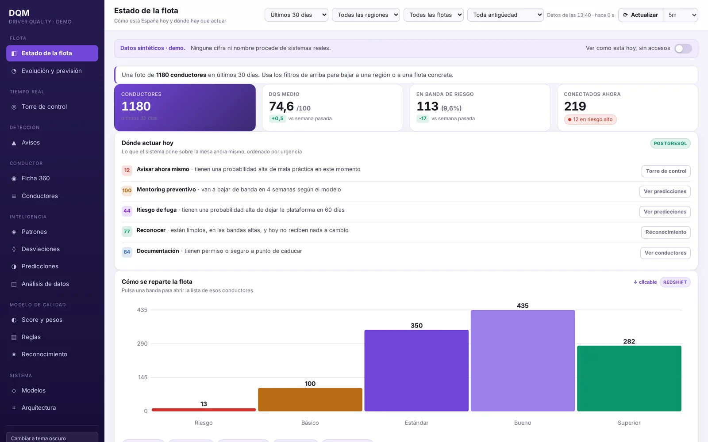
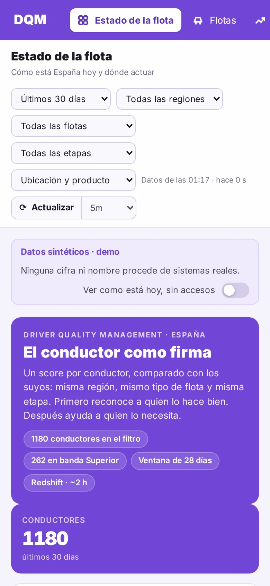
The simulator is a single HTML file with a synthetic population built in, so it opens anywhere, phone included, with no server and no real data.
The idea in one paragraph
Detecting bad practices is already mature and spread across several tools. Acting on them is fragmented, and nobody aggregates them. That empty aggregation layer is DQM, which is why the project did not start by building new detectors but by consuming the ones that already exist. The risk is not technical; it is scope.
The model
A number from 0 to 100 over a rolling 28-day window, expressed as a percentile inside the driver's cohort: region × fleet type × lifecycle stage. A driver in their first month and a veteran are not scored the same way, and neither are an independent driver and one in a large managed fleet. Scoring by percentile inside the cohort is also the only version you can defend in front of a fleet manager.
Five blocks
Productivity and reliability, rider experience, conduct, fraud and documentation. Each block has an explicit weight and the breakdown is always visible behind the number.
Two gates outside the sum
A confirmed harassment or safety case sends the driver straight to the critical band. Fraud does not average in: it triggers. The car's condition is shown for context but never moves the band, because the driver does not choose the car.
Three clocks that never mix
Data flows continuously, the score looks at 28 days, and the decision is frozen once a week on Monday. Intraday signals alert; they do not score.
Bands by percentile, not by fixed cut-offs
When I simulated fixed cut-offs on a synthetic population, more than half of the drivers fell into watch or critical. That would not describe the fleet; it would describe a badly calibrated threshold.
Why a memory and not a weekly reset
With a weekly reset, a driver who alternates a good week and a bad one never builds up enough to be sanctioned. The pattern is invisible today, and it is exactly what DQM has to see. The chart below is an illustrative simulation of that same behaviour under both models.
Eight principles the rules follow
- The three clocks do not mix. Continuous data, a 28-day score, a weekly frozen decision.
- One source of truth per metric. The same working-time measure can come out quite differently in two tools, so before accusing anyone we have to know which number rules.
- No rule reaches production without a manual audit of a sample. Accusing wrongly burns the credibility of the whole system.
- Thresholds are editable, versioned and dated. "No sanctions this month because there is no supply" is a one-minute decision that stays recorded.
- Cohort percentile, not absolute thresholds. Madrid is not Santander, and a three-month driver is not a veteran.
- Concentrated or spread before choosing the intervention. If a few drivers explain most of the events, it is individual follow-up; if it is everyone, it is communication.
- If an incentive is paying for the bad practice, removing the payment beats any warning.
- No rule goes live without its impact in euros. Each rule carries what it protects and what it puts at risk: lost supply, agent hours, the cost of blocking a profitable driver.
Architecture
- Now, today, history. Under 5 seconds for "what is this driver doing", under 5 minutes for "what happened today", and the warehouse for "is this normal for the cohort".
- An immutable snapshot for every action. Every warning or limit points to the exact score that justified it. That is the legal evidence, and it is what makes an appeal answerable.
- Reconciliation every night against the warehouse. If our own aggregate drifts by more than 2%, it is a pipeline alert, not a driver problem.
- Spreadsheets were ruled out as storage on day one: the event volume would break them in a day.
The simulator
The feedback after the first review was to go straight to design, and there was a good reason: navigating a working prototype produces more decisions in an hour than three weeks of documents. The simulator is the design deliverable, calibrated by percentiles on synthetic data.
What the kickoff changed
Every point raised at the kickoff became a screen in version 5:
- Recognition first. A positive layer with four levels and monthly challenges, cumulative and independent of the warnings. The message to the driver is "work better, earn more", and the sanction is never the message.
- The score rolled up per fleet, with a one-page quality report the commercial team can take to each fleet.
- Lifecycle stage instead of tenure in the cohort, and four fleet types: own, managed, small fleet and independent.
- Day alerts that do not wait for the 28-day window, such as a late reject at an airport hub or a licence about to expire.
- A 13-month baseline recomputed backwards, and a check that the score actually moves: a score that looks flat stops being used.
- Honest labels. Every panel says whether it would run on the warehouse, which refreshes about every two hours, or needs a source that does not exist yet.
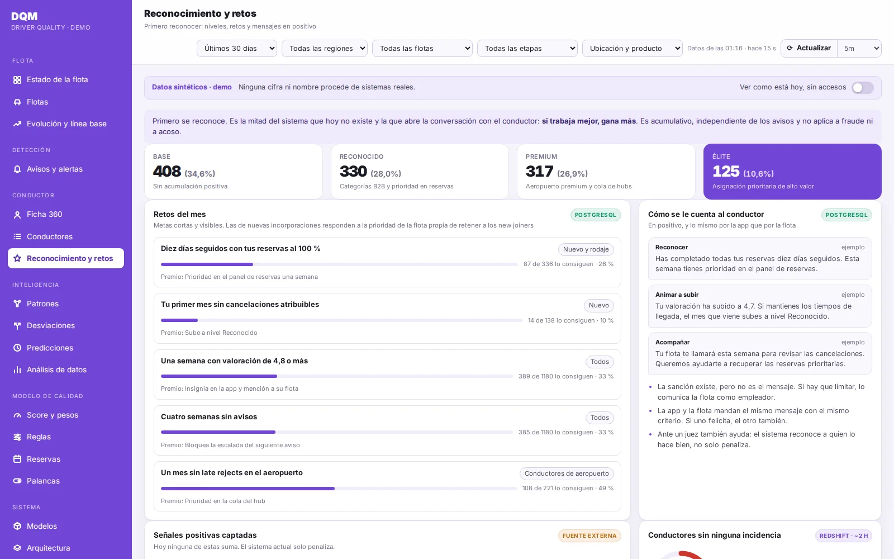
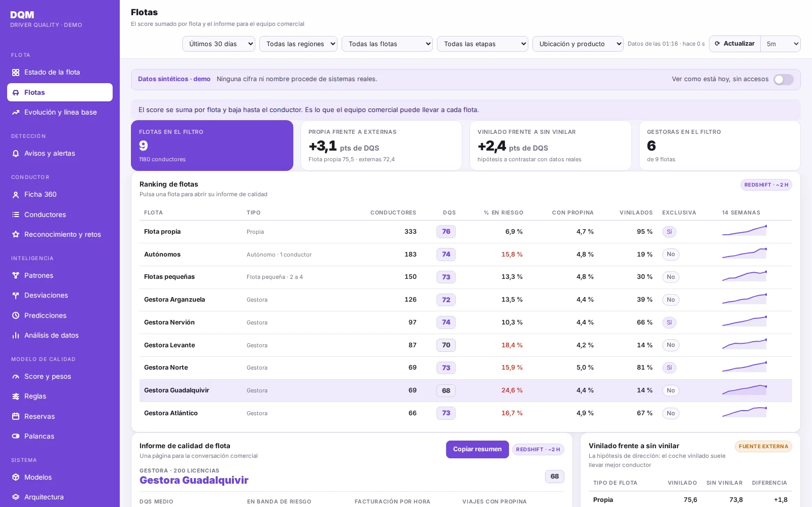
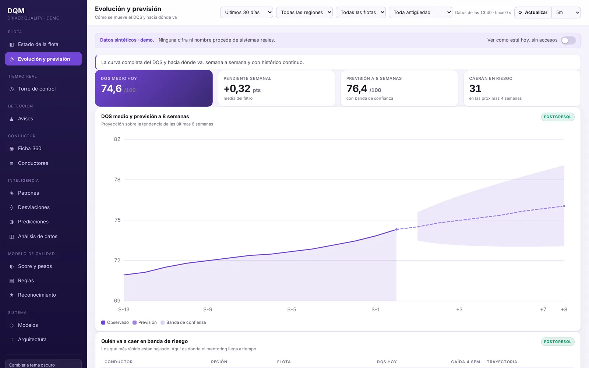
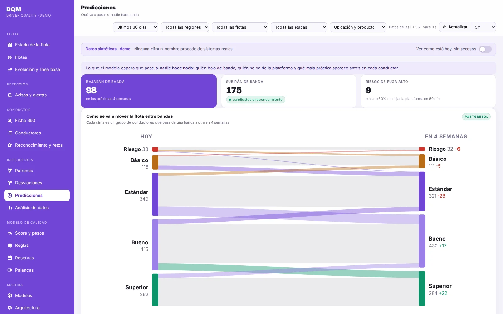
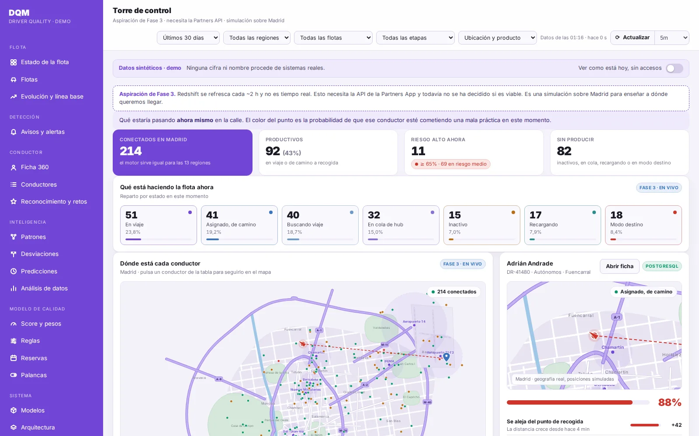
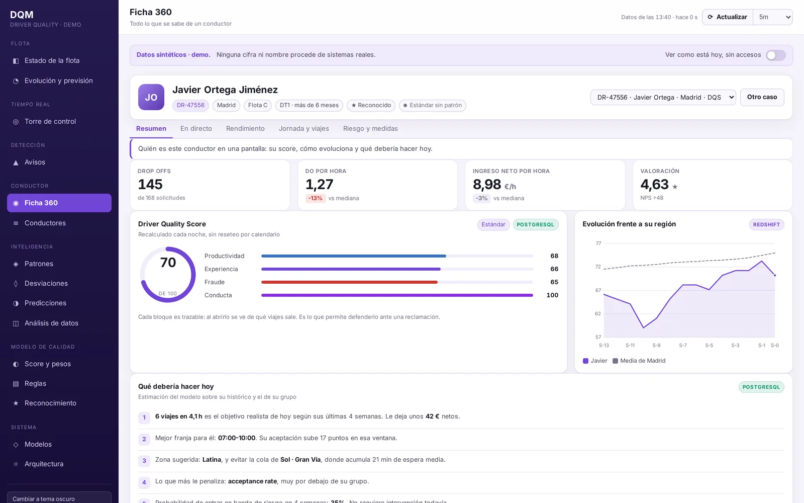
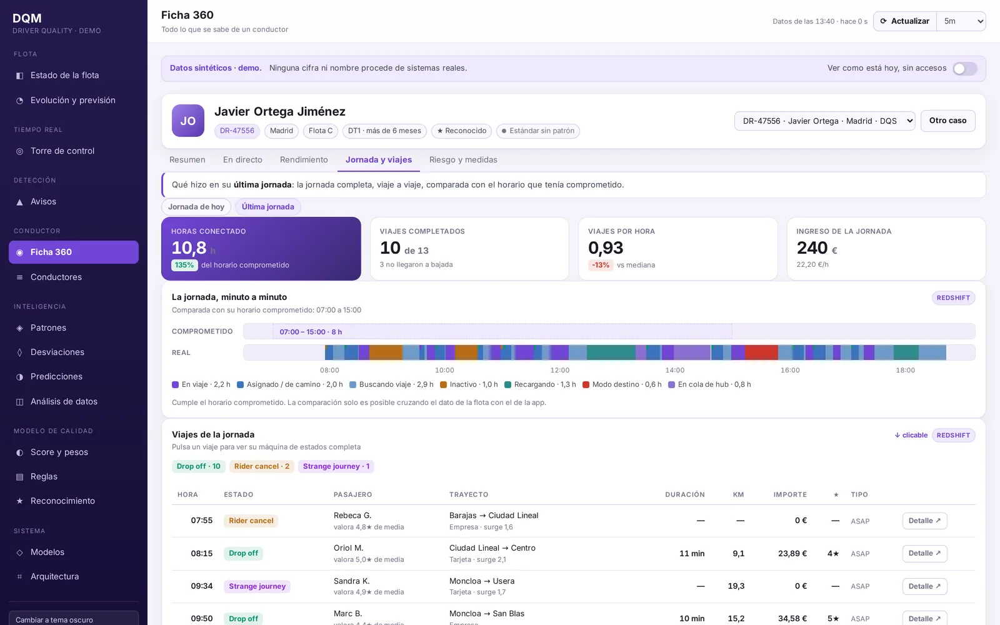
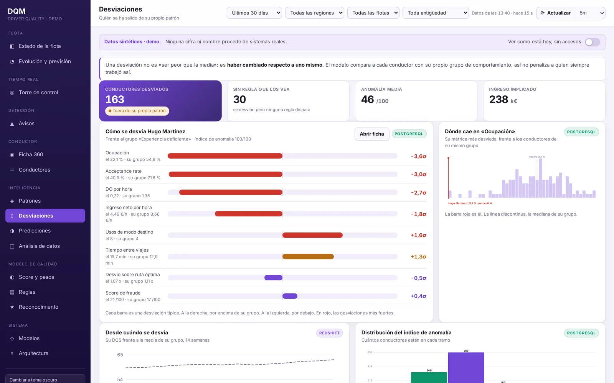
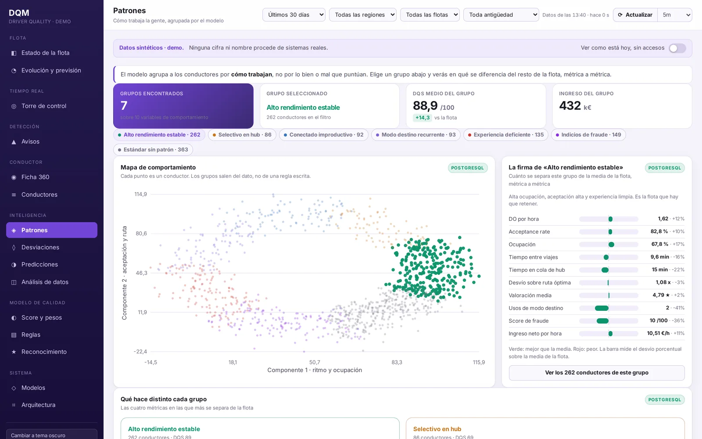
Phases
| Phase | What | Done when |
|---|---|---|
| 0 · Design Q4 2026 | Corrective model on the warehouse, which refreshes about every two hours, full recompute each cycle, own PostgreSQL, rule catalogue editable by the team | A model validated against the score definition: cohorts distinguished with significance and false positives down in a sample audit |
| 1 · Corrective Q1 2027 | Deploy the score, set baseline and target by cohort, weekly snapshot, weekly report to fleets, gamified product access | Measured impact on driver quality |
| 2 · Preventive 2027 | Live events from the partner API, alerts while the bad practice is happening | Incremental impact over phase 1 |
| 3 · Scale 2027+ | The score inside the fleet managers' own app, scoped per fleet, and the control tower as the aspiration | Fleets use it without us |
Enrichment is not a phase: telemetry, contractual schedules, documentation and chats are evaluated at the end of each phase depending on the impact reached so far.
Where it stands
Phase 0 runs from week 39 to week 47 of 2026. The access requests are out, the legal review of data use runs in parallel and blocks switching the pipeline on, not the design. Fourteen decisions are open and ordered by what they block; the first one is what exactly counts as "validated".
Every screenshot comes from the simulator running on synthetic data, with fleet and people names replaced and aggregated revenue figures hidden. Weights, cut-offs, rule thresholds and all company figures from the project charter are left out on purpose.